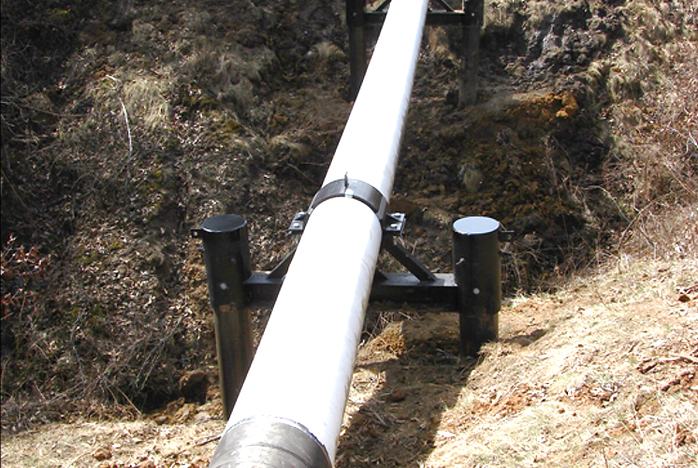

Exposed pipeline stabilization
Support the asset, then stabilize the site around it.
The completed work combines project-specific pipeline supports with channel and bank protection shaped around the crossing conditions.


Exposed Pipeline Stabilization
Stabilize the asset while the site is addressed.
Project-specific support systems for exposed or suspended pipelines where conventional cover is impractical, immediate stabilization is needed or crossing conditions have changed.
Discuss Your SitePipeline supports in the field
Pipeline exposure can leave an asset unsupported while erosion continues around it. This project pair shows the field condition and the completed application together, including the support system and surrounding erosion protection.
Exposed pipeline stabilization
The completed work combines project-specific pipeline supports with channel and bank protection shaped around the crossing conditions.
How Pipeline Supports works
Er-Con evaluates the pipeline, span, loads, water depth, access and erosion conditions before developing the support approach. Standard clamps may fit normal loads, while higher-strength configurations can be designed for more demanding stresses.
The supports stabilize the pipe at selected locations and can provide a practical response while repair decisions, lowering alternatives or broader erosion remediation are considered.

Document pipe size, span length, loads, alignment, water depth, access and active erosion.
Determine support locations, clamp configuration, strength and installation requirements.
Produce the project-specific clamps and structural elements required by the design.
Place the supports, stabilize the asset and confirm the installed condition.
Why targeted support matters
Supports can stabilize an exposed asset while the broader site response is developed.
Components are designed around the actual pipe diameter, loading and crossing geometry.
Installation options can be adapted for deeper water and challenging field conditions.
Support design can be coordinated with bank stabilization, bed protection or future crossing work.
The goal is not an online diagnosis
If a pipeline is exposed, suspended or losing support, send us the location, pipe information, field photos and any available survey data. Er-Con will evaluate the immediate condition and help define the right next step.